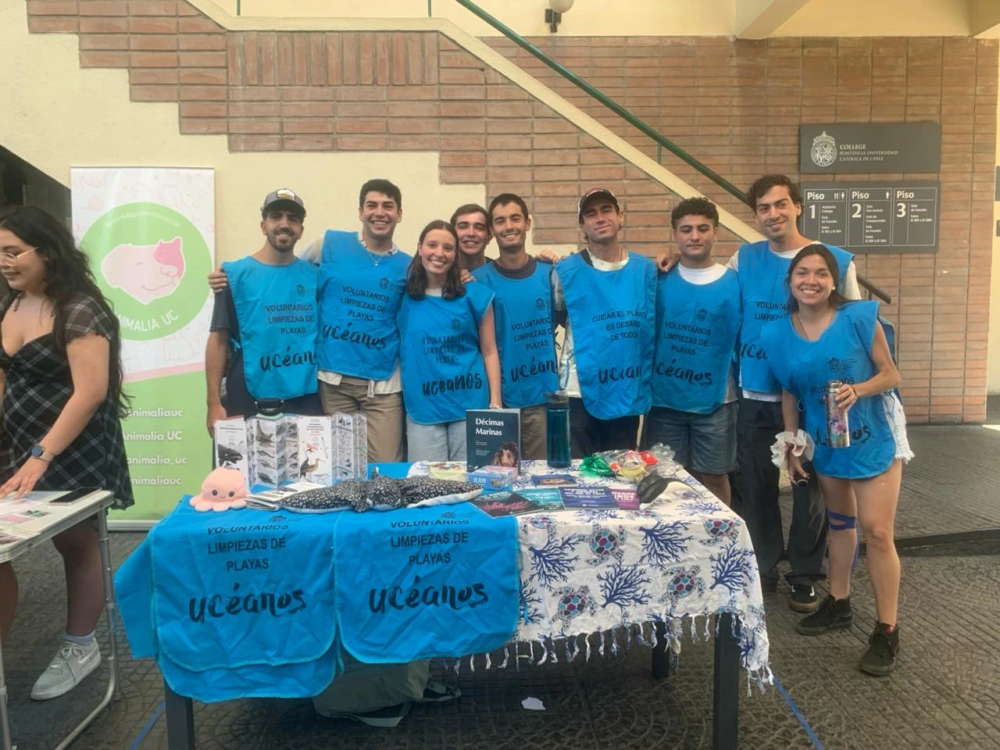
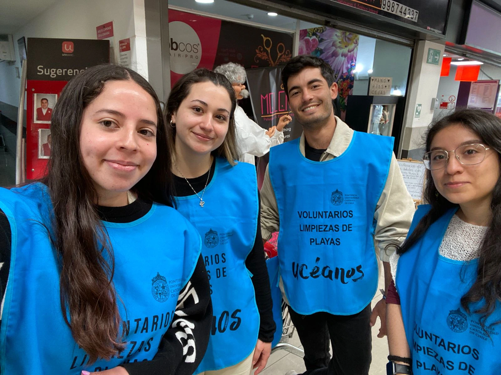
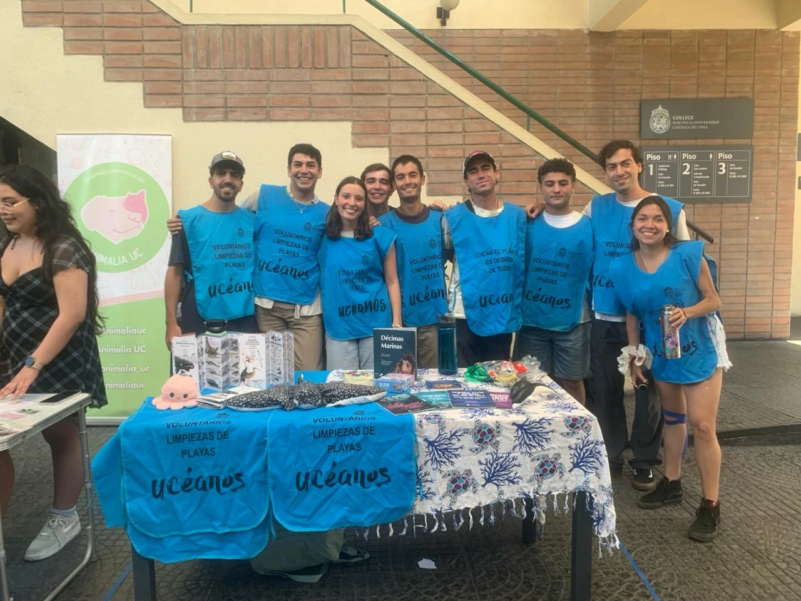
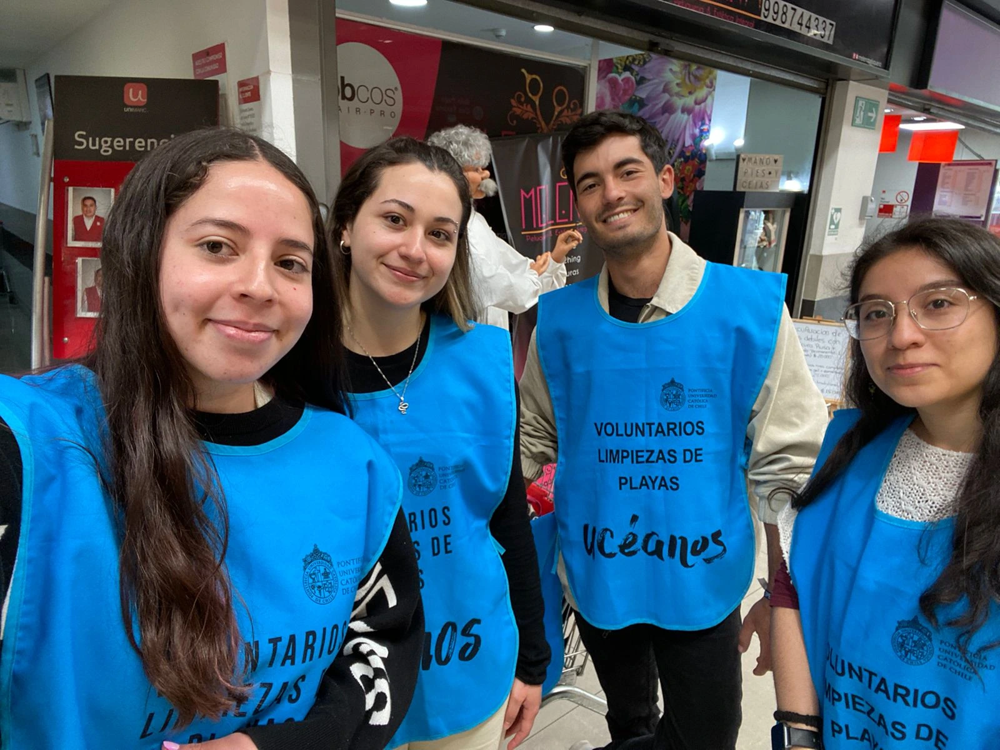
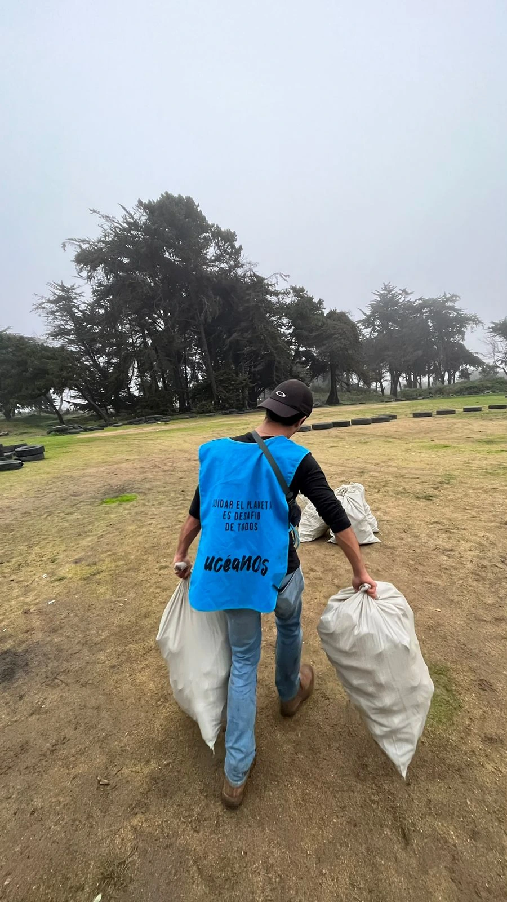
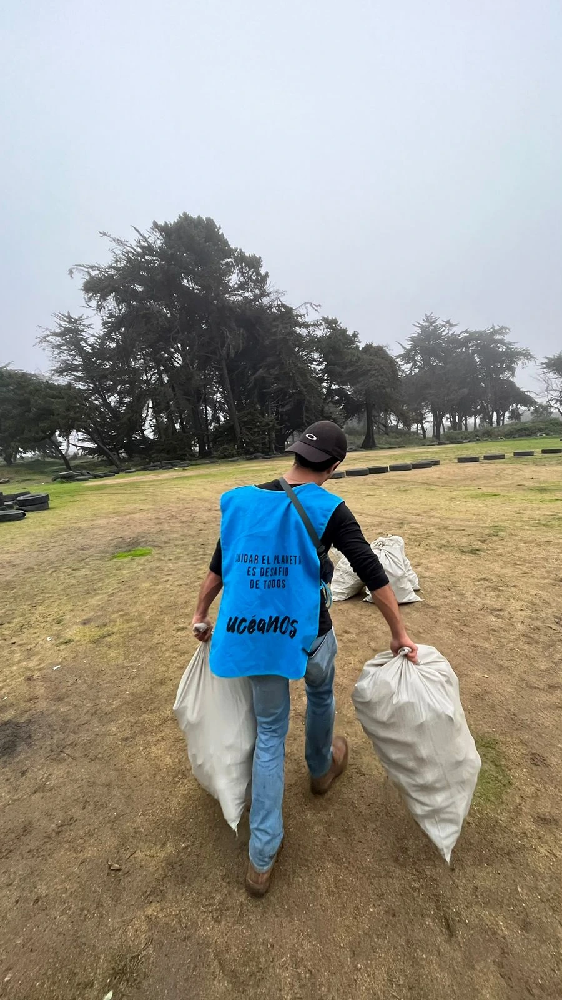

Ucéanos

Overview
Ucéanos is not only about cleaning the coast, but also about planting the seed of change. By going to different places in need of help and getting involved with the community, we make an investment in the most powerful resource for change: the local community itself. Together, we are building a more conscious and united Chile, one coastline at a time.
My Role & Contributions
- Organized more than six food drives in multiple supermarkets around Santiago.
- Handled and led groups of more than 120 volunteers.
- Structured multiple cleanups, each comprising more than three days of work.
- Secured the funding necessary to keep the project running and expanding.
Pictures
 





 

Challenges
The biggest challenge is to make people change their behavior towards plastic use and environmental consciousness. By giving people the opportunity to see firsthand the effects of pollution on the environment, they have the chance to rethink their spending habits, and we are there to provide sustainable alternatives.
Outcomes & Learnings
We are constantly learning new things about human effects on the environment and ways to fight them. By staying active in our research, we strive to find the best solutions to the most challenging environmental problems.
Back to All Projects